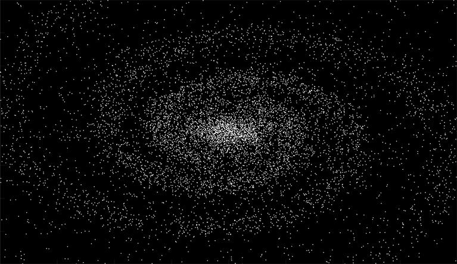
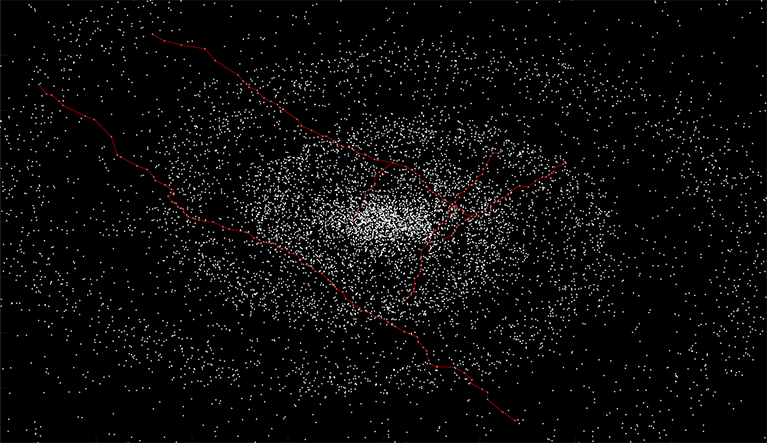
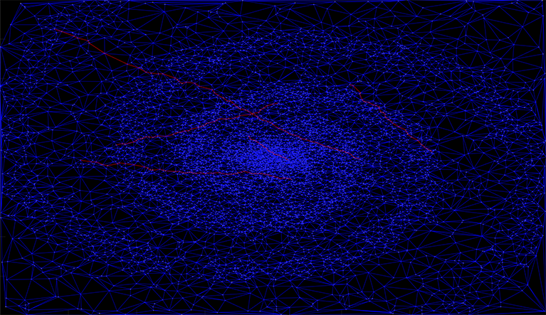

I found an article [1] showing that "Enlarging and rotating ovals aligned at the centre generate a two-armed spiral". In the following image I have placed 100 points on random positions of an oval and applied a small gaussian displacement to the points. I repeated this process a number of times, each time increasing the size of the oval and rotating it slightly.
But how do I get from a random star to another? Perfect opportunity to write a basic pathfinding algorithm for the first time.
In the above picture; what really happens is that I generate a delaunay triangulation from the pointcloud, and then implemented something similar to A* (A star) pathfinding algorithm. The image below shows the "road network" available to the pathfinding algorithm.

References:
[1].
Galactic spiral structure (Charles Francis, Erik Anderson, 2009)